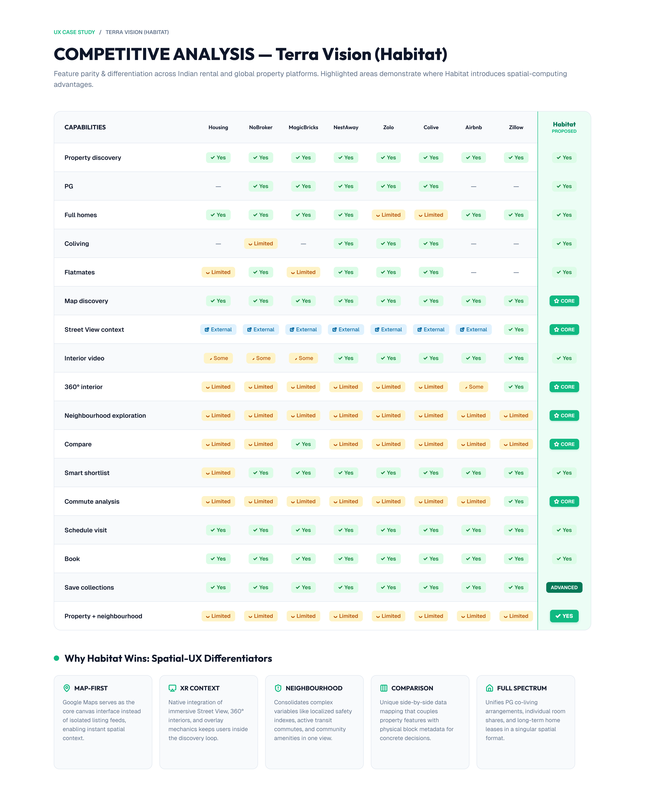
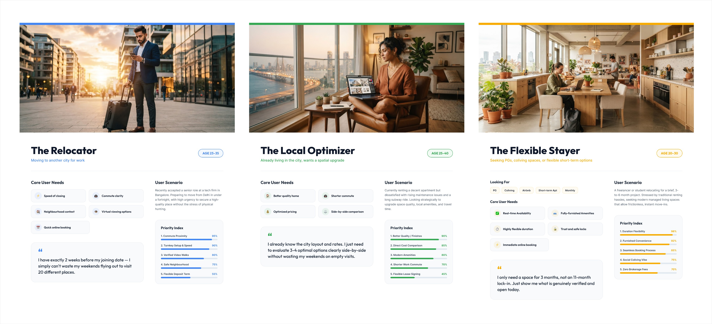
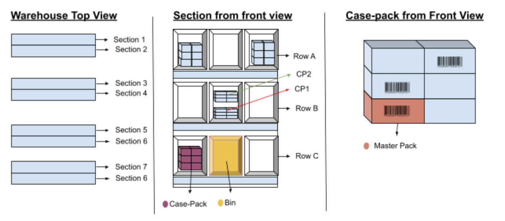
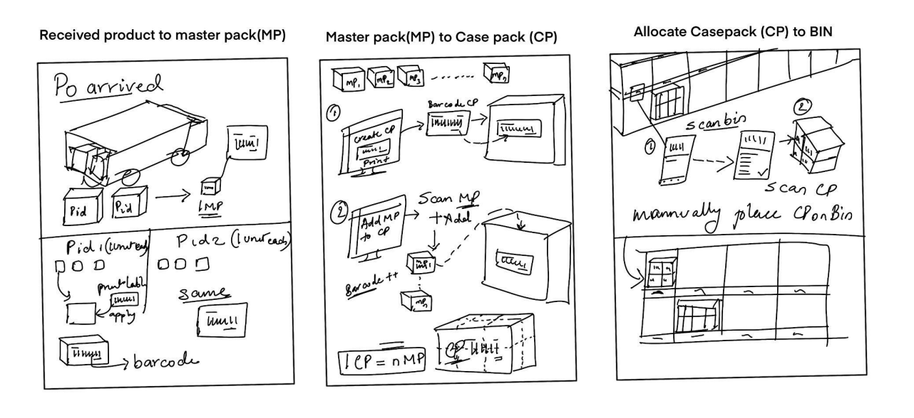
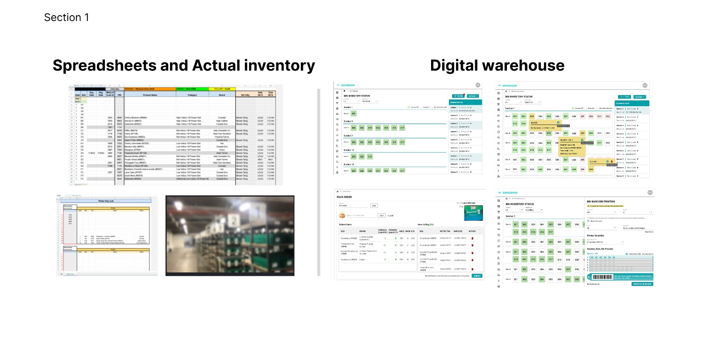
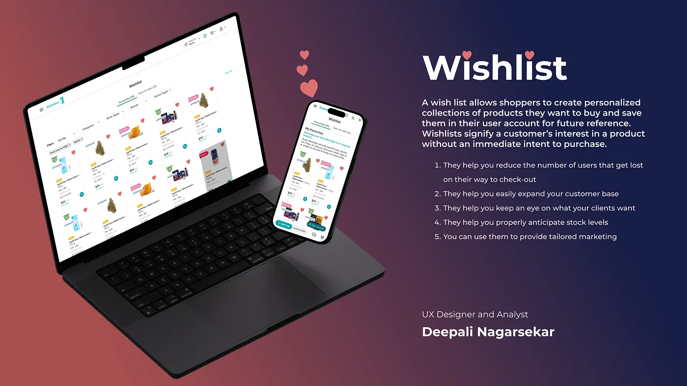

Hi, I'm Deepali Nagarsekar.
Product Designer transforming absolute complexity into clean layout realities.
Experienced Product Designer with over 6 years specializing in enhancing enterprise operations, spatial property UX, and data-driven systems. I thrive on blending user research with technical know-how to build intuitive, high-efficiency digital solutions.
Terra Vision (Habitat)
A spatial-first property and stay discovery engine designed to let renters and buyers search, virtually explore, compare, and act on a home and its surrounding neighborhood before ever stepping foot outside.
💡 The Initial Spark (Origin Story)
"While sitting on the terrace and attending a call with my parents, there was a brief moment where Mom casually said: ‘Why don't you start looking for a flat?’
That single sentence was the initial spark. We turned around, spotted a few nice buildings in the skyline, and immediately started discussing: ‘How about checking that flat over there?’ But right then, we realized how hard it was to know if any flats were actually available in those visible buildings, or if they were even within our budget. Our creative minds instantly switched from a casual parent conversation to solving a massive user problem — and that became the foundation of project Terra Vision."
📌 My Dual Strategic Role: Senior Product Designer + Project Manager
- Architected spatial-first framework unifying 360° panoramas with Google Maps context.
- Crafted side-by-side comparative decision workspace to eliminate fragmented tools.
- Designed high-fidelity screen UI, navigation structures, and interactive prototypes.
- Scoped product requirements across Phase 1 (MVP), Phase 2, and Phase 3 roadmap.
- Defined capability-based competitive feature matrices to isolate differentiators.
- Orchestrated AI-assisted design workflow to accelerate research and system modeling.
Experience Terra Vision in Action
Click below to test the interactive prototype node live in Figma.
1. High-Fidelity App UI Showcase
[Click image to inspect]
Figure 1.1: Mobile screens highlighting Map Search, 360° VR Viewport, Neighborhood Context & Visit Scheduling.
2. Discovery Artifact: Competitive Capability Matrix
[Click image to inspect]Evaluating current platform offerings across market competitors to identify critical spatial and neighborhood navigation gaps:

Figure 2.1: Feature parity & differentiation analysis across Indian rental and global property platforms.
3. Target Personas & User Scenarios
[Click image to inspect]
Figure 3.1: Persona profiles mapping user scenarios, needs, and priority indices for The Relocator, Local Optimizer, and Flexible Stayer.
4. End-to-End User Journey Map
[Click image to inspect]
Figure 4.1: Customer emotion curve and stage-by-stage opportunity mapping for Terra Vision Property Search.
5. Core Product Loop & Architecture
Procurement & Smart Bin Management System
01 — Background
The problem space
Grassdoor operates large-scale cannabis distribution warehouses — 30,000 sq ft facilities with 30+ racks, hundreds of bins, and thousands of SKUs moving in and out daily. The operations team — pickers, general managers, and inventory specialists — were managing all of this across a patchwork of Google Sheets, an internal portal, and manual physical checks. There was no single source of truth.
I was brought in as the UX lead (with product ownership) to design the Bin Management module within the internal Warehouse Portal — covering how products are stored after receiving, retrieved for order packing, audited for accuracy, and transferred between facilities.
The as-is reality
Pickers toggled between 3–5 tabs simultaneously: the warehouse portal for order data, Google Sheets for bin locations, separate spreadsheets for QC tracking, and manual physical checks to confirm stock.
What we set out to do
Design one unified flow where the system tells the picker exactly where to go, what to scan, and flags any discrepancies in real time — eliminating the spreadsheet dependency entirely.
02 — Discovery
Understanding the real workflow
Before sketching a single screen, I ran a remote moderated research session (1 hour) with 5 end-user representatives across the LA and SF facilities — general managers, operation specialists, and inventory pickers. The goal was to observe the current-state workflow in action, not just hear about it.
"Since we have to manage the portal as well as the spreadsheet, we need to use split screen — if it was just one platform, a tablet or mobile would have been really easy to work with."
Participants included Anakin Hambrink (General Manager, 4 years experience), Gabriella Legarreta (Operations Specialist), Samantha Pelayo, Jose Maldonado, Kayla Gonzalez, and Philip — representing both LA and SF facilities. This cross-facility coverage was important because each location has different aisle counts, layouts, and batch structures.
Key research findings
Pickers manually typed each product ID into a spreadsheet to generate a pick list — 15 to 60 seconds per PID just to find a location for a single item in a 15-unit order.
All totes were visually identical — no system-level catch for wrong-bag or missing-item errors. Manual QC at the end was the only safeguard, requiring an extra team member.
The team used "Section / Row / Bin" in daily conversation, but the spreadsheet used different labels (Aisle / Rack / Slot). This terminology mismatch caused daily confusion and handoff errors.
Multiple orders cannot be packed simultaneously — too high a risk of cross-contamination across ~30 exit bags. One order at a time is a deliberate operational rule, not a tech limitation.
03 — Warehouse structure
Mapping the physical space to a data model
Before designing screens, I mapped the physical warehouse hierarchy into a logical model the system would need to reflect. Products flow from individual Master Packs (MPs) → grouped into Case Packs (CPs) → placed in Bins (Slots) → within Racks → within Aisles (Sections). Active inventory (aisles 1–18) holds the current FIFO batch. Non-active batches live in aisles 21–28.

A critical early decision was standardising naming. I proposed adopting Aisle → Rack → Slot as the canonical system terminology — replacing the inconsistent "Section / Row / Bin" mix that lived across existing spreadsheets and verbal communication. This single alignment prevented naming conflicts across all four workflows and significantly reduced confusion during developer handoff.
04 — The four workflows
Designing end-to-end, not screen-by-screen
Rather than designing isolated screens, I mapped full use-case flows for each workflow — starting from a user story, through a detailed use case with step-by-step logic, into a user flow diagram. This gave me and the engineering team a shared contract before any high-fidelity work began.
Audit — Inventory cycle count
Warehouse managers needed to verify physical stock against system records — one product at a time, bin by bin. The process starts with selecting a product to audit, then scanning each bin to check if Case Packs and Master Packs match what the system expects. Missing CPs get flagged and marked as "adjusted/missing" after user confirmation. A post-audit report captures everything for compliance. The key design challenge was handling mismatch states gracefully — keeping the user in control rather than blocking them.
Transfer — Batch inventory transfer between facilities
Moving inventory between facilities (e.g. SF Distribution to LA Retail) requires strict regulatory compliance — the entire Metrc batch tag must be transferred, never partial. I designed a Transfer Guide panel that shows exactly which aisles, racks, and bins hold the selected SKU, with real-time bin-level progress as CPs are scanned. The Transfer button only activates when 100% of the Metrc batch is accounted for — building the compliance requirement into the interaction itself.
Retrieval — Order packing
This was the highest-frequency workflow — happening dozens of times per day. The current process required pickers to manually type PIDs into a separate picker spreadsheet to get bin locations. The proposed system auto-generates a FIFO-ordered pick list (aisle 1 → 18) directly from the order scan, with bin suggestions based on manufacture date, the correct bag brand and size, and barcode scanning to confirm each Master Pack as it's added. One order at a time by design — which research confirmed is the right constraint to prevent cross-bag errors.
Restore — Return Master Packs to bins
When full bags are pulled out, destroyed, or orders are returned, Master Packs need to go back into the correct Case Packs in the correct bins. Previously this required Google Sheets and manual coordination. The proposed flow: scan the destination CP, scan each MP into it, place the CP back in the bin, and the system updates inventory automatically — eliminating the third-party tool dependency and creating a reliable paper trail for every MP movement.

05 — Key design decisions
Where the hard thinking happened
Good UX for internal tools isn't about aesthetics — it's about removing the mental load from people who are physically moving through a warehouse, often with their hands full. Every major decision was driven by that constraint.
Guided panels over free-form search
For both Audit and Transfer, I introduced a contextual Guide panel that shows the user exactly where in the warehouse to go — broken down by Aisle, Rack, and Bin with visual progress indicators (green = complete, partial = in progress, white = not started). This removed the need to cross-reference a spreadsheet mid-task. The panel updates live as items are scanned.
Progressively activating actions to encode compliance
For Transfer, the Transfer button remains disabled until the complete Metrc batch has been scanned — a regulatory hard constraint. Rather than showing an error after the fact, the UI communicates progress continuously (a percentage bar + CP count tab) so the user always knows exactly what remains. The constraint becomes the interface.
FIFO baked into suggestions, not enforced by memory
Products must be picked in First-In-First-Out order — but previously this was entirely a human memory task. I designed the pick list to surface the recommended Aisle + Rack based on manufacture date automatically, so pickers follow FIFO without needing to reason about it. Making the right path the obvious path.
Mismatch states as first-class flows, not error dismissals
During audit, CP and MP mismatches aren't errors to dismiss — they're legitimate operational records that affect regulatory reporting. I designed explicit confirmation flows: the user sees a list of unscanned items, can cancel and continue scanning, or confirm and mark items as "adjusted/missing." This produces a clean audit trail rather than silent data loss — and it respects the fact that the user might have made a scan error, not an inventory error.
Terminology as a design artefact
Proposing and aligning on Aisle / Rack / Slot as canonical terminology was a design decision, not just a content decision. It prevented three separate naming systems (UX docs, spreadsheets, developer database) from diverging — which would have caused bugs and user confusion that no amount of screen design could fix.

06 — Impact
What changed after shipping
The module consolidated inventory operations from a 3–5 tab workflow (Warehouse Portal + multiple Google Sheets) into a single guided system. The shift from spreadsheet-based to system-recorded operations also fundamentally improved error traceability — when something went wrong, there was now a clear audit trail instead of a gap in a spreadsheet.
07 — Reflection
What I'd carry forward
Terminology alignment is a UX decision.
Standardising Aisle / Rack / Slot early prevented naming conflicts across all four workflows, design documentation, and developer handoff. It was ten minutes of alignment that saved weeks of confusion.
Designing for constraint is designing for trust.
Hard gates — the Transfer button, the save confirmation for audits — aren't friction. They're the product's promise that the data is correct. Regulatory environments need those promises made visible.
Research revealed the "why" behind rules I might have changed.
Without the discovery session I would likely have designed multi-order batching as a feature — which would have actively increased error rates. Observing the real workflow was the most valuable hour of the project.
Open questions surfaced during UX saved dev rework.
Flagging doubts like "can we rescan an audited bin?" and "what happens to returned MPs?" during the design phase — rather than leaving them for engineering to discover — prevented late-stage surprises and helped the team align on edge cases before they became bugs.
Internal tools are held to the same standard as consumer products by their users.
Warehouse pickers use this software for hours every day. Poor flows don't just cause frustration — they cause financial and compliance errors. That stakes clarity focused every decision.
Automated Customer Support (ACS) System
Read Case Study on Medium ↗Designing an automated system to enhance first-contact support thresholds, streamline query volumes, and optimize live operational data streams.
Validated UX Impact Metric
+15% Growth in First Contact Resolution (FCR) Performance
The Architecture Framework
The primary design focus was engineering clean hand-off patterns between context-aware diagnostic modules and human support agents. By introducing intuitive query-grouping menus and predicting user intent early, we relieved downstream queue stress without compromising overall satisfaction.
Wishlist Ecosystem Optimization
Read Full Article on Medium ↗Converting casual item-bookmark drop-offs into actionable, high-intent discovery funnels within modern e-commerce platforms.
Introduction
A wishlist isn’t just the heart icon on an online store; it’s crucial for businesses. It’s more than a fancy button – it influences how companies earn money and make decisions. Wishlists simplify user experience, aid in selling products, and assist in planning inventory.
UX Execution Realization
Rather than leaving the wishlist layer as a passive item bin, we re-imagined the layout as an organized collection dashboard. Users can sort items cleanly, track live pricing variations, and share collaborative registries without dealing with clunky navigation loops.

Professional Experience Matrix
6+ Years across B2B, SaaS, Healthcare, Telecommunication Governance, and Logistics
Consultant (Senior UX Researcher / Product Designer)
@ Virtusa- Collaborated in creating a unified end-to-end compliance governance and assurance system for the Pan Telecommunication group, improving usage and security concerns. Policy portals and recording and sharing data internally were made easy.
- Contributed to the unification of 12 regional public and private healthcare websites into a single, content-driven platform using Adobe Experience Manager (AEM).
- Led the discovery and definition phases, conducting competitive analysis, market analysis, and content audits to inform strategic decisions. Designed user personas, empathy maps, and customer journey workflows.
- Actively partnered with Product Managers, Engineers, and Solution Designers throughout the product life-cycle, facilitating project alignment meetings and ensuring design feasibility.
- Managed stakeholder relationships across cross-functional teams including SMEs, product owners, and senior leadership; gathered requirements and synthesized findings to drive consensus.
- Contributed to and maintained a shared design framework, ensuring consistency across components and speeding up design-to-development handoff in an agile environment.
User Experience Designer & Analyst
@ Grassdoor Logistic Technologies Pvt Ltd- Collaborated with cross-functional teams while directly engaging with the CTO, directors, and senior stakeholders to align design strategies and present findings.
- Led the end-to-end redesign of an eCommerce admin portal, driving digital transformation that reduced task completion time by 20-40% and warehouse worker efforts by 35-40%.
- Leveraged data from tools like Metabase, Hotjar, and Google Analytics to influence inventory decisions and personalize the customer portal with AI. This led to 5 new projects, boosted retention by 30%, and cut drop-off rates by 50%.
- Designed and developed user experiences for search optimization, wishlist, inventory management, procurement, and driver time management modules.
- Supported the UX Director by preparing data-driven insights for investor meetings while maintaining strict data confidentiality.
Analytic & UX Research Skills
Tools & Technology
Education
Let's build clear, optimized digital tools together.
I am open to discussions regarding senior product design leadership positions, complex enterprise platform architectures, and UX strategic initiatives.